01. A Comprehensive Machine Learning Paradigm for Space Debris Surveillance
Research project with one partner, Nived Nandakumar. Published on SSRN. Read the paper
The problem
- Millions of fragments from old rockets and dead satellites now orbit Earth
- Kessler syndrome is the runaway case, where each collision creates debris that causes the next
- Ground telescopes only track the larger pieces and the atmosphere distorts what they see
- No system has actually removed debris, only proposals and planned missions
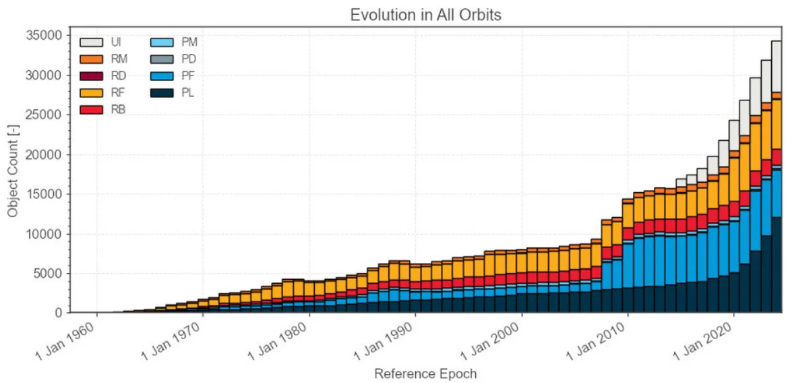
Fig. 1. Tracked objects in orbit over a 64 year period. Source: European Space Agency, 2024.
Model one, detection
- Convolutional neural network trained on over 5,000 labelled orbital images
- Multi task loss combining classification, localisation and confidence
- Anchor boxes refined against ground truth by minimising intersection over union
- Random scaling, rotation and flipping to make it generalise
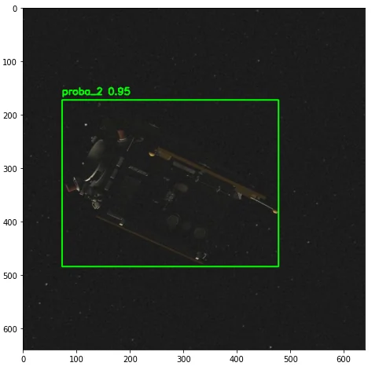
Fig. 2. Detection output on a held out test image.
Eq. 1. Localisation loss, penalising a box in the wrong place or of the wrong size.
Model two, trajectory
- Physics informed neural network with an LSTM layer reading trajectory history
- Kepler's third law, eccentricity limits, drag and gravity all enforced as loss terms
- A plain network drifts into orbits that cannot physically exist, the constraints stop that
- Time derivatives modelled with gradient tape so predictions stay smooth
Eq. 2. Total loss, combining prediction error with four weighted physics penalties.
Eq. 3. Kepler's third law written as a residual. Zero when period and semi-major axis agree.
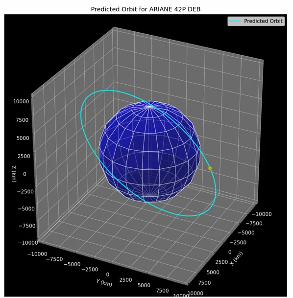
Fig. 3. A predicted orbit for a piece of Ariane 42P rocket debris.
Model three, collision risk
- Random forest regressor, 100 decision trees on bootstrapped samples
- Works from relative speed, distance and approach angle
- Risk predicted on a log base 2 scale for resolution at low probabilities
- Averaging decorrelated trees cuts variance, which the formula makes explicit
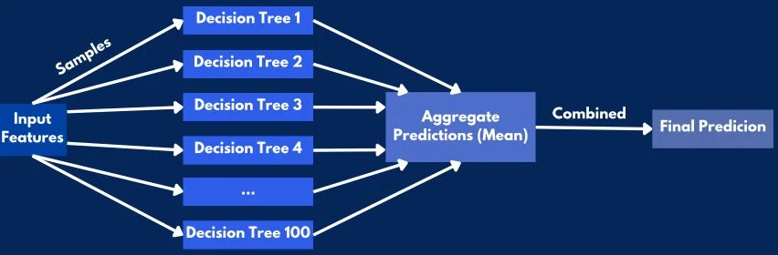
Fig. 4. Random forest structure. Samples fan out to one hundred trees and the predictions are averaged.
Eq. 4. Why averaging works, and why decorrelating the trees matters.
The laser application
- The three models feed a proposed satellite carrying a pulsed laser
- Focused heat vaporises a thin surface layer, which is ablation
- The plasma plume pushes the fragment onto a lower orbit until it burns up
- More precise than any ground based attempt because the platform is already alongside
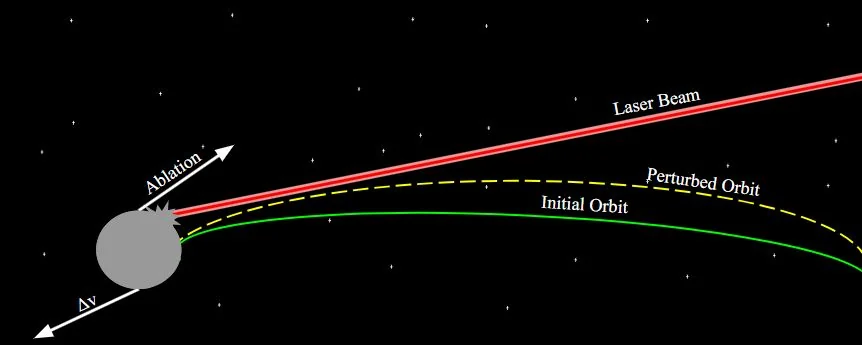
Fig. 5. Ablation geometry. The vaporised layer produces thrust that perturbs the orbit downward.
Results
- Detection reached 95.4 percent mean average precision, 98.0 percent on recall confidence
- Trajectory model reached R squared 0.979 with mean squared error 0.015
- Collision risk model reached R squared 0.981 with mean squared error 0.014
- All three run behind one interface, upload an image and get object, orbit and risk together
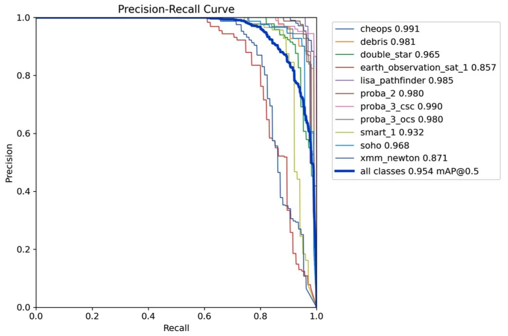
Fig. 6. Precision against recall for every class.
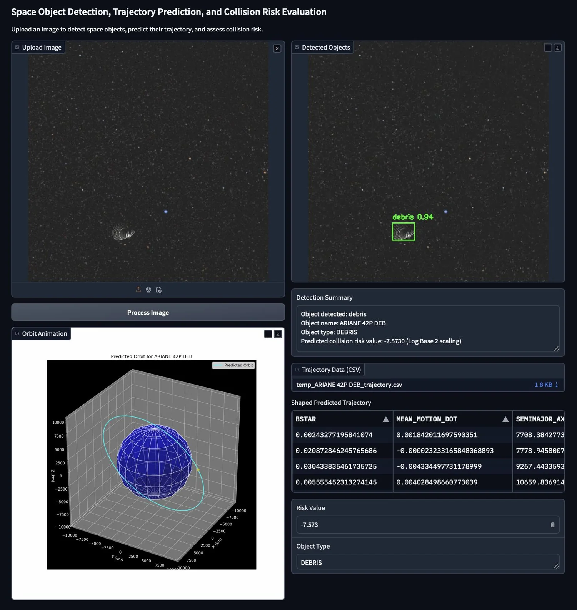
Fig. 7. The interface running detection, orbit prediction and collision scoring on one uploaded image.
02. Thermal Control of CubeSats using Micro-structured Films
Research conducted through the NASA STEM Enhancement in Earth Science Internship, mentored by Bridget Kimsey. Paper published on SSRN. Read the paper
The problem
- CubeSats are shoebox sized with almost no mass budget for cooling hardware
- AI chips on board run hot and absorbed sunlight adds to the load
- Radiation flips bits in memory and corrupts what the chip computes
- Radiation hardened parts exist but lag commercial chips badly on performance
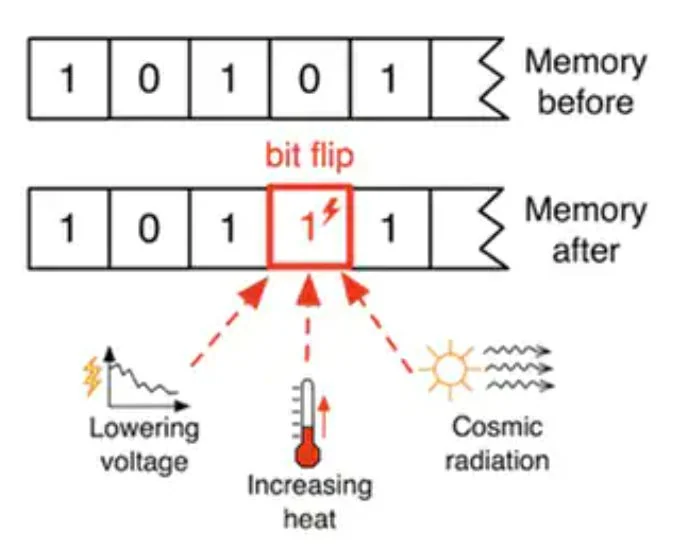
Fig. 8. Radiation striking a memory chip flips a stored bit and corrupts the result. Source: Cui, M., 2022.
The mechanism
- The Saharan silver ant survives midday desert heat with no active cooling
- Its hairs have a triangular cross section that drives total internal reflection
- The same geometry raises emission in the mid infrared
- Reflecting and radiating at once is exactly what a satellite face needs
Fig. 9. The Saharan silver ant. Its silver appearance is the reflection itself.
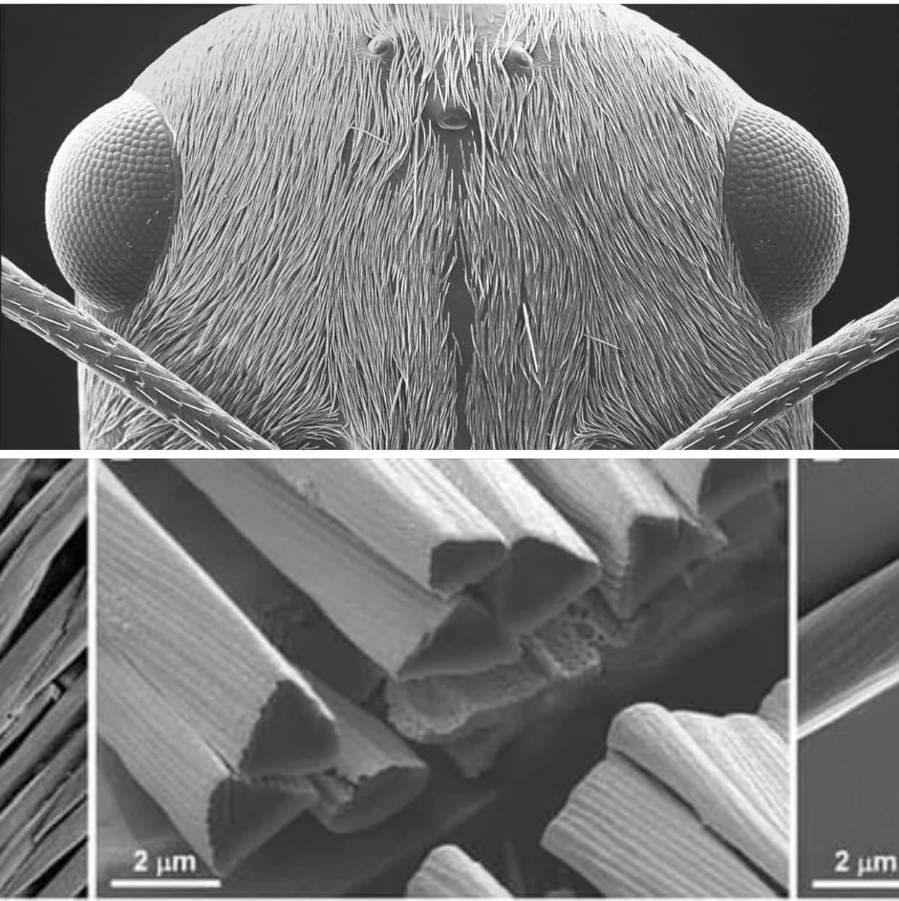
Fig. 10. Electron microscope images of the ant's hairs and their triangular cross section. Source: Shi, N. N. et al., 2015, Science.
The proposed film
- Replicate that triangular microstructure in a thin silicone film
- Mount on the minus Z face and couple it to the internal electronics
- Passive throughout, no power draw and almost no added mass
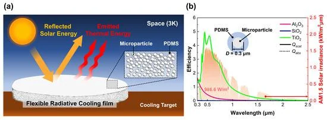
Fig. 11. How a radiative cooling film reflects sunlight and emits heat. Source: Jung, J. et al., 2023, Micromachines.
Results
- Research conducted through the NASA STEM Enhancement in Earth Science Internship
- Paper published on SSRN and available to read
- Literature supports solar reflectance above 95 percent for this structure class
- Passive throughout, so it draws no power and adds almost no mass to the satellite
03. Penn Electric Racing Mechanical Challenge: Brake Pedal Design
Solo design project, completed in one week as the mechanical application challenge for Penn Electric Racing.
The problem
- Formula SAE is a student contest to design and build a race car
- This was the Penn mechanical application challenge, which I did alone
- The rules demand two independent hydraulic circuits and no brake by wire
- Target pressures of 1200 psi front and 400 psi rear had to be validated, not assumed
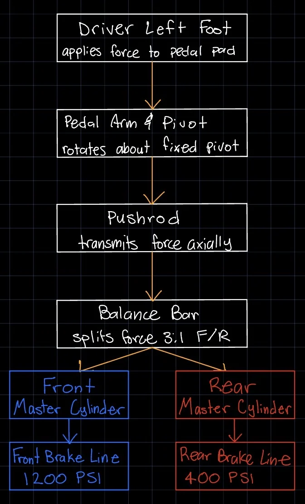
Fig. 12. Complete force path, from the driver's foot to the pressure at each axle.
From deceleration to hydraulic pressure
- Weight transfer under 1.5 g braking moves 740.5 N onto the front axle
- Front axle load rises to 1964.8 N while the rear drops to 585.8 N
- Tyre friction sets the torque each axle must absorb, 748.6 and 223.2 newton metres
- Working back through the caliper gives 613 psi front and 183 psi rear required
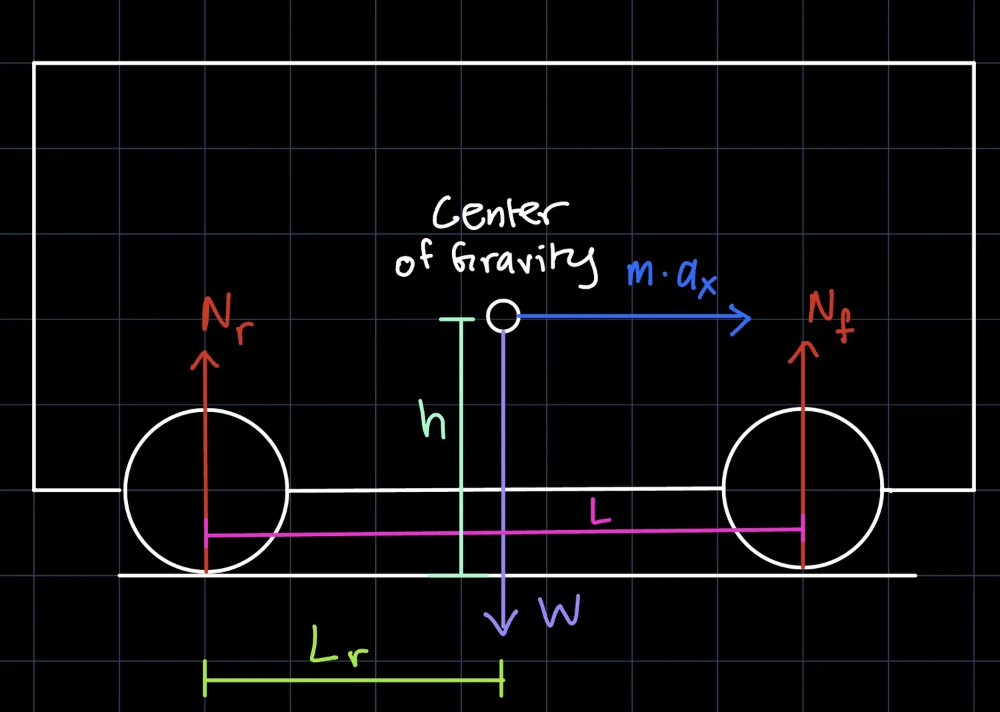
Fig. 13. Free body diagram of the car under braking.
Eq. 5. Load transferred to the front axle under braking, 740.5 N.
Eq. 6. Required line pressure. The factor of two is because a caliper clamps from both sides.
Pedal and hydraulics
- Moment balance about the pivot gives a pedal ratio of 6 to 1
- A 1.0 inch pushrod arm therefore sets a 6.0 inch pedal arm, inside the envelope
- 70 lbf of foot force becomes 420 lbf at the pushrod
- One bore serves both circuits at 0.578 inch calculated, rounded to a 9/16 inch Tilton unit
- Balance bar pivot at one quarter length splits that 420 lbf into 315 and 105 lbf
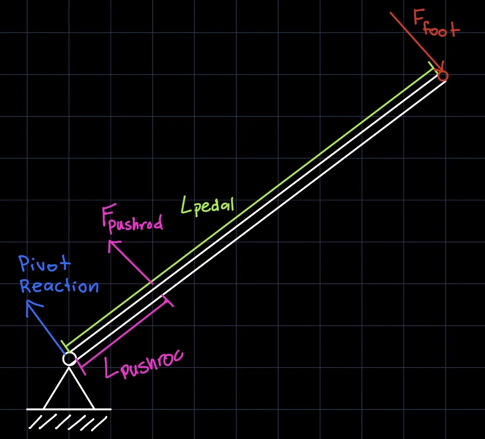
Fig. 14. Moment balance on the pedal arm about its floor pivot.
Eq. 7. The pedal ratio is both a force ratio and a length ratio.
Eq. 8. Bore sizing from the target pressure.
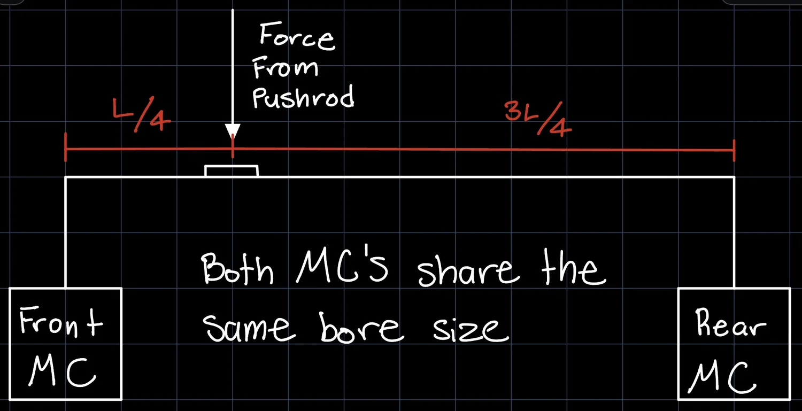
Fig. 15. The balance bar. Both master cylinders share one bore size.
Eq. 9. Balance bar reactions. A three to one split puts the pivot one quarter along the bar.
Structural sizing
- Structural case uses the rulebook 1500 N foot load, giving 2023 lbf at the pushrod
- Bending stress with a safety factor of 2.5 sizes the aluminium arm to 0.625 inch
- Steel would need only 0.448 inch but weighs more for the stiffness gained, so aluminium wins
- Euler buckling on the pushrod returns a safety factor of 48.2
- Pin shear and bolt bearing return 3.24 and 54.1
Eq. 10. Bending stress in a solid rectangular section.
Eq. 11. Euler critical buckling load for the pushrod.
Results
- Full assembly specified with a bill of materials split into off the shelf and manufactured
- Pedal sweeps 14.9 degrees over 1.6 inches of travel
- Every structural member clears its safety factor with margin
- Two independent circuits mean a failure on one axle still leaves braking on the other
04. RIPPLE: AI-Powered Vertical Supply Chain Management for Medicine
Built over one weekend at DNHacks 2026 with four teammates. Showcase and source
The problem
- Built over one weekend at DNHacks with four teammates
- Most medicines depend on ingredients from a handful of overseas factories
- Six antibiotics that look diversified trace back to one shared precursor
- If that factory stops, all six run short at once
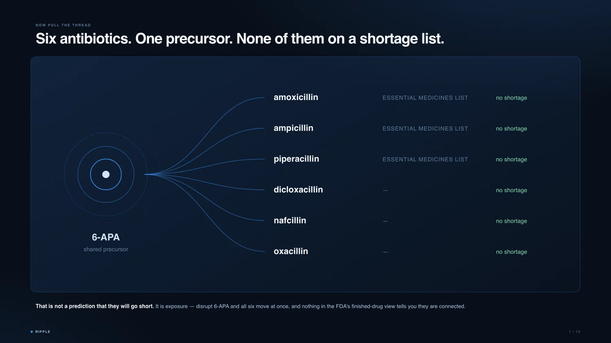
Fig. 16. Six antibiotics traced back to one shared precursor. None are on a shortage list.
The graph and the risk model
- Public FDA registers pulled into one graph of 1,732 nodes and 3,425 edges
- Failure spreads through the graph by breadth first search with a redundancy rollup
- An L2 regularised logistic model scores which plant fails next, from nine leakage free features
- Raw scores recalibrated so a displayed percentage matches observed frequency
Fig. 17. The console tracing a drug through its suppliers and showing where they sit in the world.
Eq. 12. The model maps a weighted sum of features to a probability.
Eq. 13. The Wilson interval, used to check the displayed percentage against observed frequency.
Rerouting and the sensor
- Switch off any factory and watch the disruption propagate
- Replacement suppliers ranked on capability, geography and their own risk
- Each checked against Trade Agreements Act and Defence Department restrictions
- An ESP32 sensor streams cold chain telemetry and computes mean kinetic temperature
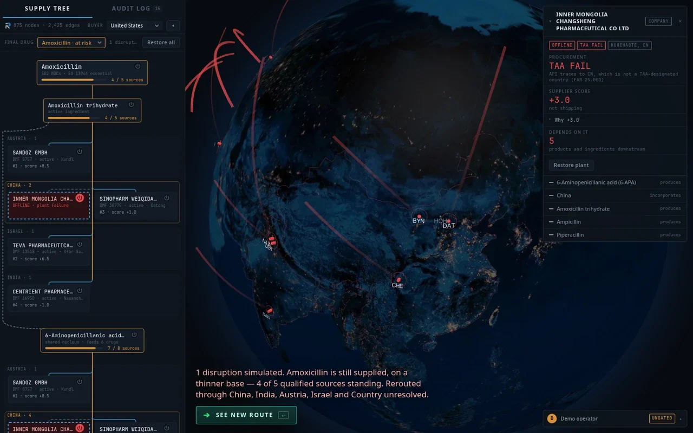
Fig. 18. A simulated factory shutdown, with the affected branch marked.
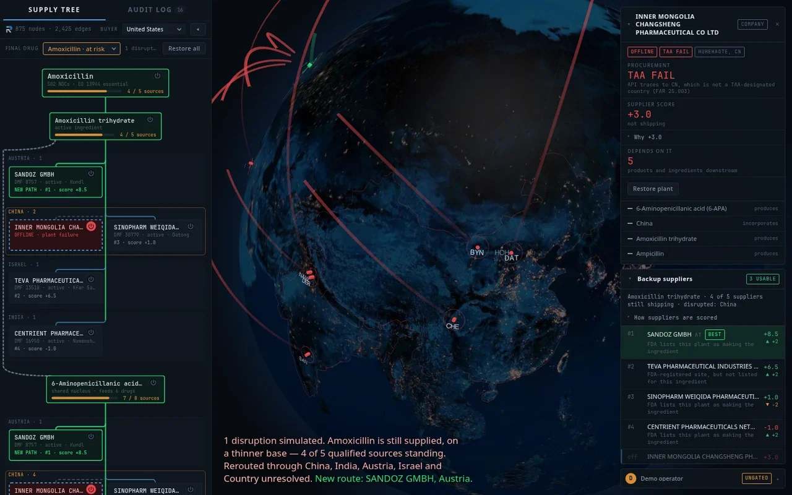
Fig. 19. Ranked replacement suppliers, each scored and checked for procurement eligibility.
Eq. 14. Mean kinetic temperature, weighted by the time each reading represents.
Results
- Model reached 0.814 AUC against a 0.70 baseline, beating it on all three time cutoffs
- Gradient boosting was tested and lost at 0.641, so the transparent model is also the accurate one
- Supplier name matching scored 100 percent on a labelled benchmark
- Covers 1,706 of 1,732 nodes, and the 26 it cannot resolve are left blank deliberately
05. G.E.A.R.: Go-Kart Efficiency through Aerodynamic Research
Senior research project with two classmates, presented at tjSTAR.
The problem
- Senior research project with two classmates, presented at tjSTAR
- Open wheel karts churn the air around exposed tyres and lose speed to it
- The front panel is the first surface the airflow meets
- We asked whether shaping it could cut drag without losing the downforce that holds grip
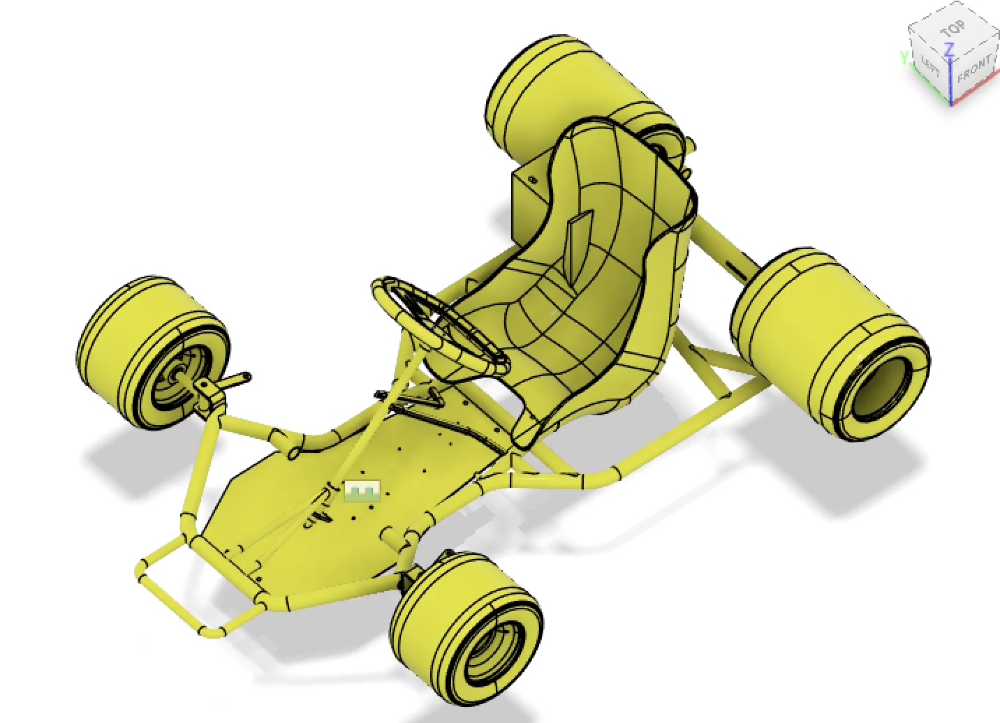
Fig. 20. The kart rebuilt in CAD, used as the baseline every panel was tested against.
What governs the problem
- Drag rises with the square of velocity, so losses grow fast at speed
- Downforce follows the same square law, which is why the two trade against each other
- Reynolds number sets how turbulent the flow around the kart becomes
- Goal was a panel that performs inside a high Reynolds number regime
Eq. 15. Drag force.
Eq. 16. Reynolds number, which decides whether the flow is smooth or turbulent.
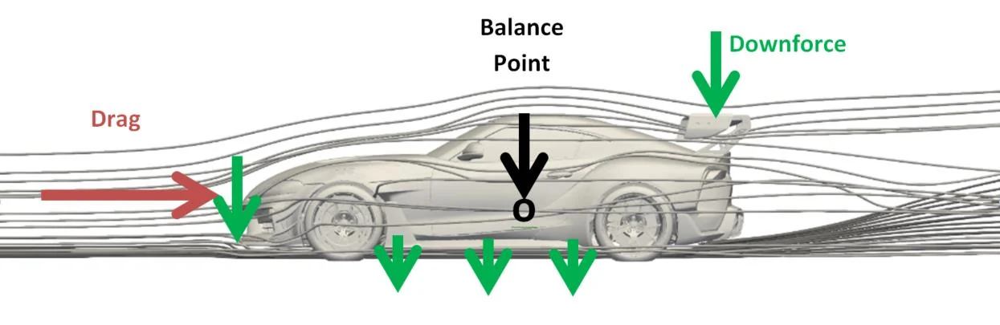
Fig. 21. Drag, downforce and the balance point between them.
How we tested
- Several panel shapes designed in CAD, curved, flat and sloped
- Cowl and cowl less variants to isolate how much drag the driver adds
- Each 3D printed and run in a wind tunnel against the bare chassis
- Drag and front and rear downforce measured across a swept speed range
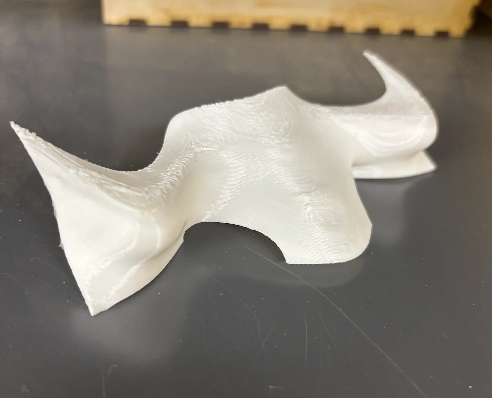
Fig. 22. One of the 3D printed front panels made for wind tunnel testing.
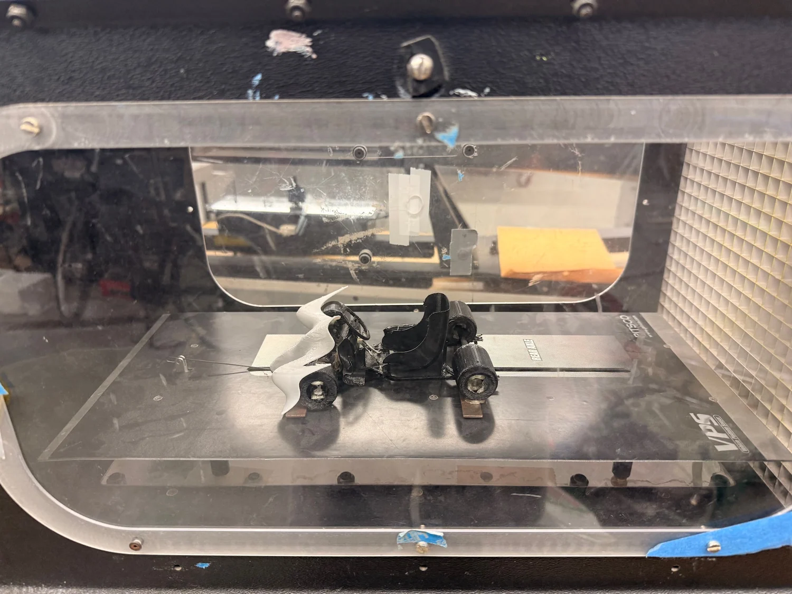
Fig. 23. The kart model mounted in the wind tunnel.
Results
- The open panel beat the covered panel at every wind speed tested
- The driver cover added more drag than the downforce it recovered was worth
- The gap widened with speed, matching the square law
- CFD agreed with the tunnel, and wide frontal area is the limit to fix next
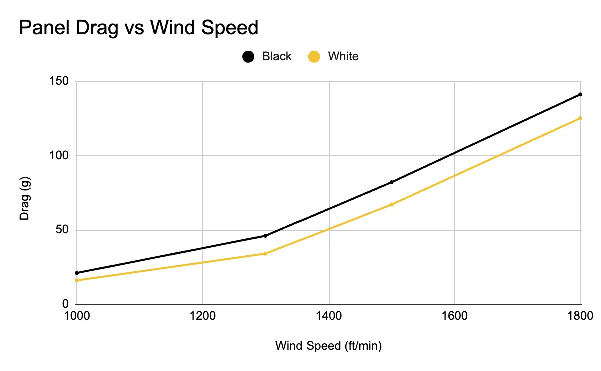
Fig. 24. Measured drag against wind speed for the covered panel and the open panel.